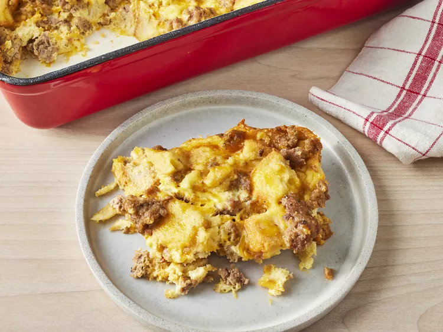

Christmas Breakfast Sausage Casserole

Description
Make the holiday morning breakfast extra special with this delicious breakfast sausage casserole. The entire casserole is assembled the night before, so all you'll need to do on Christmas morning is pop it in the oven (and it'll be done by the time everyone is finished opening their presents)!
Ingredients
- 1 pound ground pork sausage
- 1 teaspoon mustard powder
- ½ teaspoon salt
- 4 eggs, beaten
- 2 cups milk
- 6 slices white bread, toasted and cut into cubes
- 8 ounces mild Cheddar cheese, shredded
Steps
- Crumble sausage into a medium skillet. Cook over medium heat until evenly brown; drain.
- In a medium bowl, mix together mustard powder, salt, eggs and milk. Add the sausage, bread cubes, and cheese, and stir to coat evenly. Pour into a greased 9x13 inch baking dish. Cover, and chill in the refrigerator for 8 hours, or overnight.
- Preheat oven to 350 degrees F (175 degrees C).
- Cover, and bake 45 to 60 minutes. Uncover, and reduce temperature to 325 degrees F (165 degrees C). Bake for an additional 30 minutes, or until set.